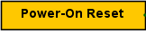

Сброс при включении
Сброс при включении
| Библиотека: | Монтаж |
| Введён в: | 3.2 |
| Внешний вид: |
 |
Поведение
Компонент «Сброс при включении» (POR) формирует импульс начального сброса в начале моделирования. Длительность импульса определяется атрибутом Длительность импульса. Сброс происходит при открытии проекта в Logisim-Evolution или при перезапуске моделирования через соответствующий пункт меню «Моделирование».
В зависимости от значения атрибута Переход сигнал сброса может переключаться с высокого уровня на низкий (активный высокий уровень) или с низкого на высокий (активный низкий уровень). В пошаговом режиме моделирования переключение произойдёт по истечении заданного времени, но синхронно с шагами моделирования (выполняемыми по нажатию Ctrl-I).
Контакты
Компонент имеет единственный однобитный контакт — выход, на котором формируется сигнал сброса. Расположение контакта определяется атрибутом Направление.
Атрибуты
Когда компонент выбран или добавляется, клавиши со стрелками меняют его атрибут Направление.
- Направление
- Сторона компонента, на которой расположен его выходной контакт.
- Длительность импульса
- Время в секундах, в течение которого удерживается сигнал сброса перед переключением в противоположное состояние.
- Переход
- Определяет направление изменения сигнала сброса: с высокого уровня на низкий (активный высокий сброс) или с низкого на высокий (активный низкий сброс).
- Размер
- Размер условного графического обозначения компонента на схеме: Узкий, Средний или Широкий.
Поведение Инструмента «Нажатие»
Не предусмотрено.
Назад к Справке по библиотеке